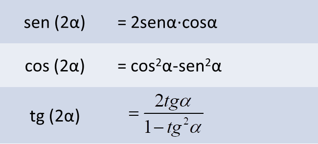
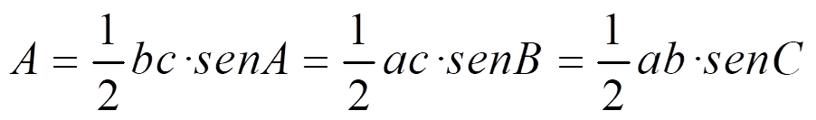

El radián es la medida de un ángulo cuyo vértice es el centro de la circunferencia y que abarca un arco con la longitud del radio
π rad = 180º
En un triángulo rectángulo y uno de sus ángulos agudos es α, definimos su seno, coseno y tangente como:
Y sus razones inversas, cosecante, secante y cotangente:
Para representar ángulos en una circunferencia:
- Cogemos el O (0,0) como vértice
- Usamos el radio del semieje positivo de abscisas como origen
- Dibujamos el extremo del ángulo midiéndolo
- En sentido contrario a las agujas del reloj, si es positivo
- En el sentido de las agujas del reloj, si es negativo
Si el radio es 1, se llama circunferencia goniométrica.
Tenemos cuatro cuadrantes:
Si P(x,y) es el punto de intersección de la circunferencia de radio r y el radio del ángulo, entonces:
El signo de las razones en los cuadrantes es:
Propiedades:
- sen2 α + cos2 α = 1, por el Teorema de Pitágoras.
- tg2 α + 1 = sec2 α, si dividimos la fórmula anterior por cos2 α
- -1 ≤ senα ≤ 1 -1 ≤ cosα ≤ 1
- Ángulos complementarios, α y 90o – α:
 |
 |
- Ángulos suplementarios, α y 180o - α:
- Ángulos cuya diferencia es 180o, α y 180o + α:
- Ángulos opuestos, α y – α:
 |
- Ángulos mayores que 360o. Si x de dividir entre 360o, entonces

- Razones de las sumas de ángulos:
- Razones de la resta de ángulos:
- Razones del ángulo doble

- Razones del ángulo mitad:
Una ecuación trigonométrica es una ecuación con la incógnita en una razón trigonométrica. Por ejemplo: cos2x = senx
Para resolverlas, debemos seguir los siguientes pasos:
- Aplica las fórmulas para dejar un solo ángulo:
cos2 x-sen2 x=sen x
- Y haz que las razones sean del mismo tipo:
1 – sen2 x - sen2 x = sen x
- Resuelve la ecuación como si la razón trigonométrica fuera la incógnita:
- Calcula el ángulo con la ayuda de un dibujo:


- Escribe el conjunto de soluciones añadiendo un número entero de circunferencias. Si el ángulo es una función de x, despeja la incógnita.

Resolver un triángulo es encontrar todos sus lados y todos sus ángulos. Para hacerlo en un triángulo rectángulo, tenemos estas fórmulas:
TEOREMA DEL SENO: las longitudes de los lados de un triángulo son proporcionales a los senos de sus ángulos opuestos:
TEOREMA DEL COSENO

Área del triángulo:
